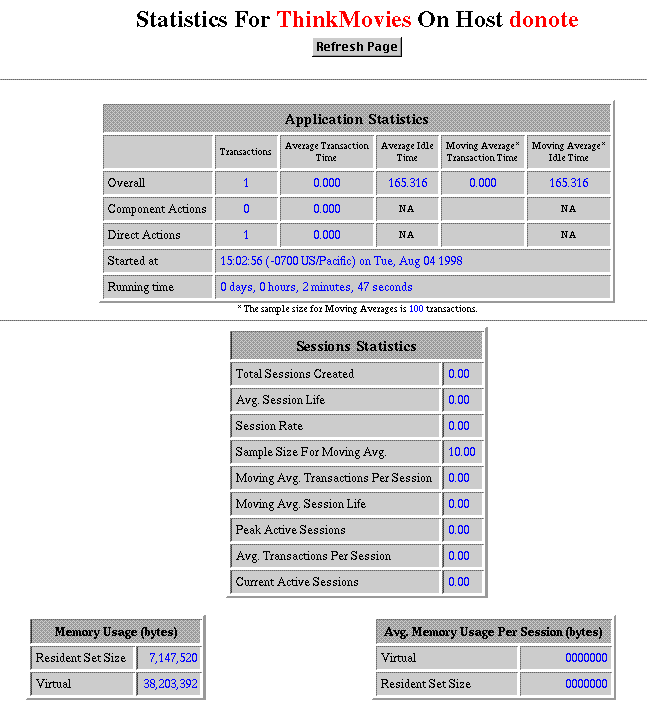

Table of Contents
Table of Contents  Next Section
Table of Contents
Next Section
Table of Contents  Previous Section
Previous Section
http://myhost/cgi-bin/WebObjects/MyWebApp.woa/wa/WOStats
If there are multiple instances, specify the instance number as well:
http://myhost/cgi-bin/WebObjects/MyWebApp.woa/1/wa/WOStats
The "1" just before "/wa" is the instance number.
The WOStats page looks similar to the following example:

See the description of WOStats in the WOExtensions Reference for more information about what the page displays.
Table of Contents Next Section